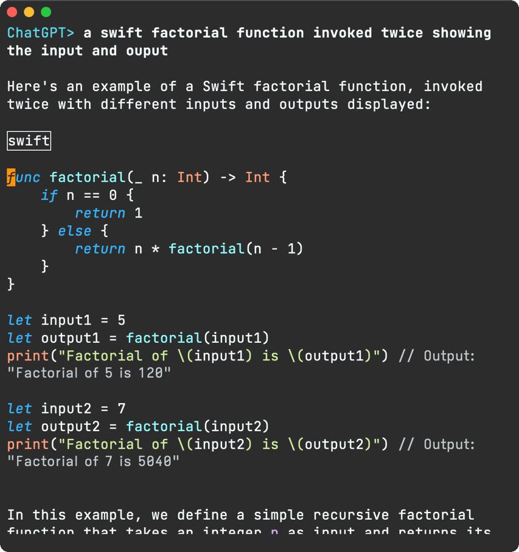
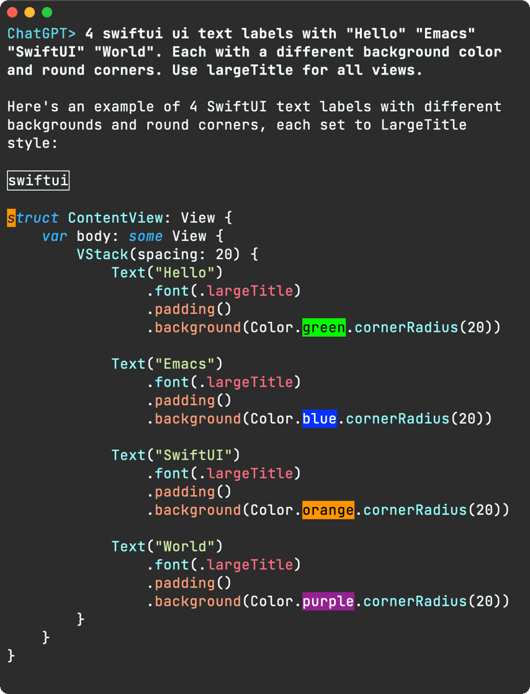
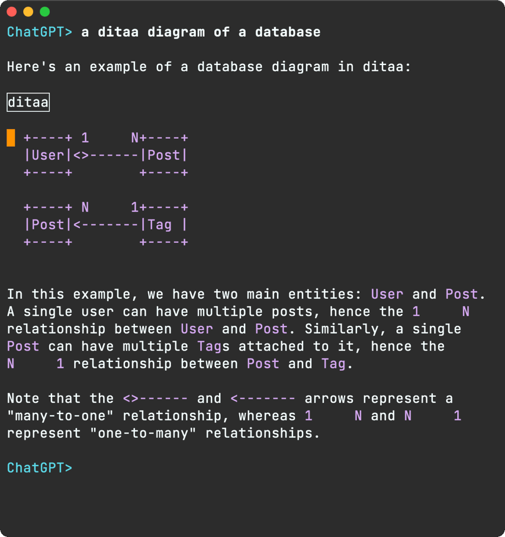
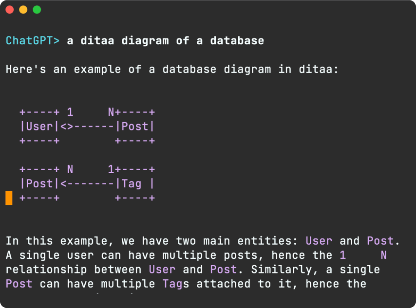
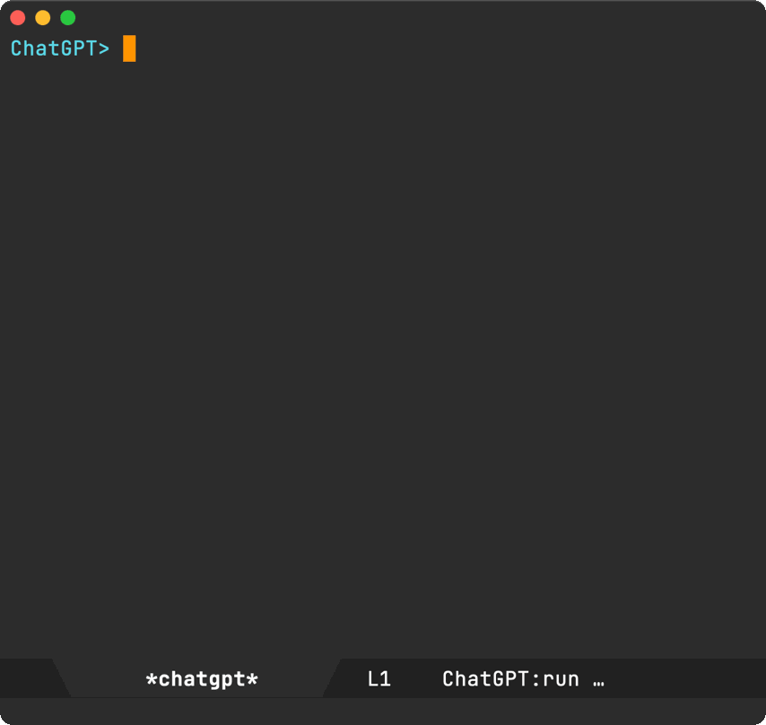
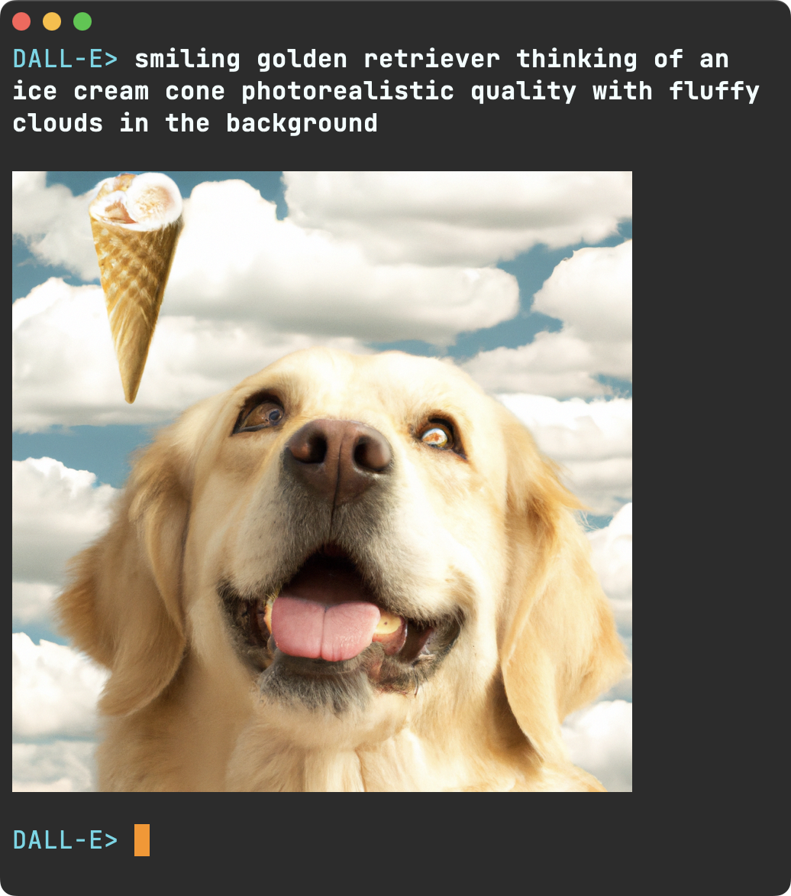
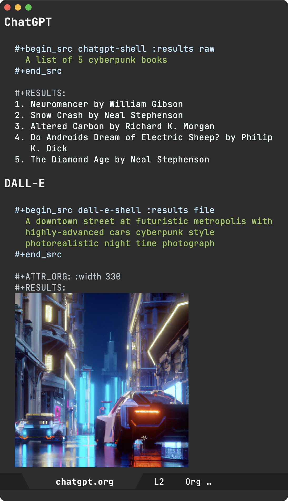

Álvaro Ramírez
chatgpt-shell updates
About a month ago, I posted about an experiment to build a ChatGPT Emacs shell using comint mode. Since then, it's turned into a package of sorts, evolving with user feedback and pull requests.
Now on MELPA
While chatgpt-shell is a young package still, it seems useful enough to share more widely. As of today, chatgpt-shell is available on MELPA. Many thanks to Chris Rayner for his MELPA guidance to get the package added.

I'll cover some of the goodies included in the latest chatgpt-shell.
Delegating to Org Babel
chatgpt-shell now evaluates Markdown source blocks by delegating to org babel. I've had success with a handful of languages. In some instances, some babel headers may need overriding in chatgpt-shell-babel-headers.
Here's a Swift execution via babel, showing standard output.

In addition to standard output, chatgpt-shell can now render blocks generating images. Here's a rendered SwiftUI layout via ob-swiftui.

Can also do diagrams. Here's ditaa in action.

Renaming blocks
At times, ChatGPT may forget to label source blocks or maybe you just want to name it differently… You can now rename blocks at point.

Send prompt/region
There are a handful of commands to send prompts from other buffers, including the region. For example chatgpt-shell-explain-code.

- chatgpt-shell-send-region
- chatgpt-shell-generate-unit-test
- chatgpt-shell-refactor-code
- chatgpt-shell-proofread-doc
- chatgpt-shell-eshell-summarize-last-command-output
- chatgpt-shell-eshell-whats-wrong-with-last-command
Saving/restoring transcript
You can save your current session to a transcript and restore later.

History improvements
Nicolas Martyanoff has a great post on making IELM More Comfortable. A couple of improvements that stood out for me were:
- Making the command history persistent.
- Searching history with
shell-maker-search-history/M-rviacompleting-read.
shell-maker-search-history, coupled with your completion framework of choice, can be pretty handy. I happen to use Oleh Krehel's ivy.
shell-maker (make your own AI shells)
While ChatGPT is a popular service, there are many others sprouting. Some are cloud-based, others local, proprietary, open source… In any case, it'd be great be able to hook on to them without much overhead. shell-maker should help with that. The first shell-maker clients are chatgpt-shell and dall-e-shell.

While I've built dall-e-shell, it'd be great to see what others can do with shell-maker. If you wire it up to anything, please get in touch (Mastodon / Twitter / Reddit / Email).
dall-e-shell, ob-chatgpt-shell, and ob-dall-e-shell (on MELPA too)
UPDATE: dall-e-shell, ob-chatgpt-shell, and ob-dall-e-shell are now available on MELPA also.
You've seen dall-e-shell in the previous section. Here's what ob-chatgpt-shell and ob-dall-e-shell look like in an org mode document:

How are you using chatgpt-shell?
Whether you are an existing chatgpt-shell user, or would like to give things a try, installing from MELPA should generally make things easier for ya. As I mentioned, chatgpt-shell is a young package still. There are unexplored Emacs integrations out there. I'd love to hear about whatever you come up with (Mastodon / Twitter / Reddit / Email).